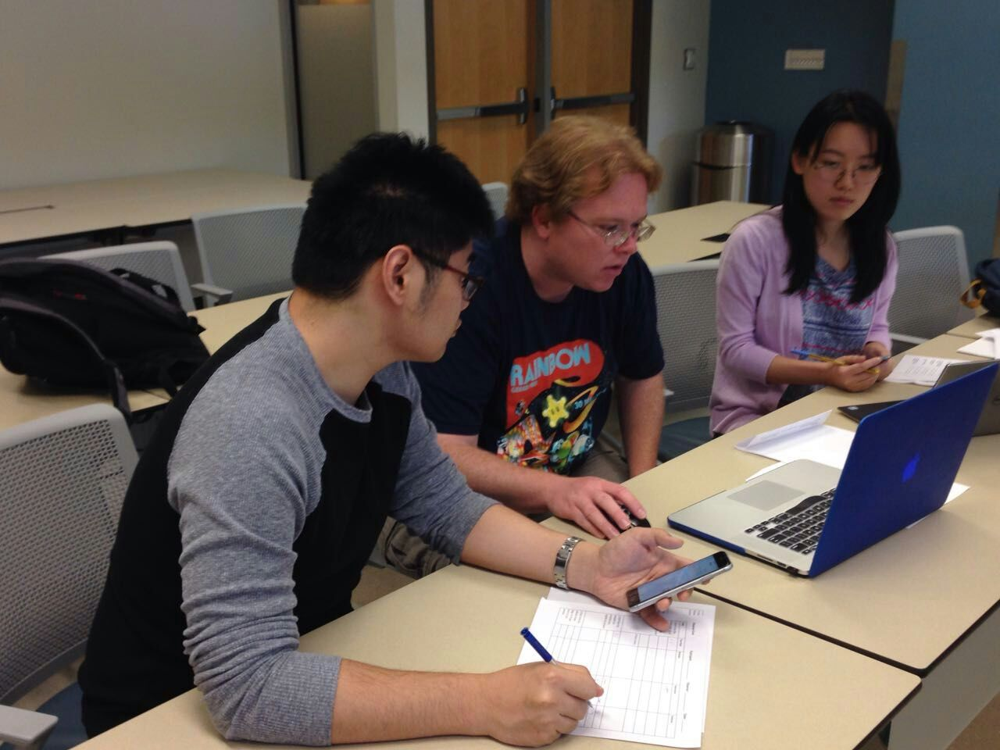
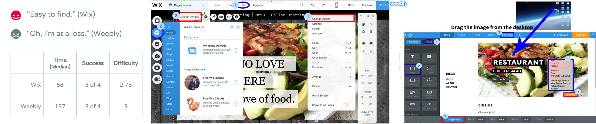

Usability Study on Website Builders

This project aimed to compare the two popular website builders: Wix and Weebly. The A website builder is a convenient tool for people to build a website with no coding and less designing process. We tried to design and conduct usability testing to find the pros and cons of using these two particular website builders.
Designing Tasks
First, we needed to set up the testing goal. We decided to look in-depth into the usability issues of exploring the website builder, finding the ideal templates and domains, using the editing function, saving and publishing the website.
Second, we adopted performance metrics, self-reported metrics, and behavioral metrics to evaluate the system usability so that we could collect both quantitative and qualitative data to make a precise conclusion.
Preparation
We did a pilot test and refined the test plan. We registered new accounts on Wix and Weebly and created several copies of templates for each participant.
To avoid browser’s auto filling, we used Chrome’s incognito tabs to do the testing. Each team had both Mac and PC laptops so the participant could choose his/her familiar one.
We tried some screen casting software and decided to use Screencast-O-Matic which can record both the screen and webcam (for observing participants’ expressions) and the record size is relatively small.
Testing
We had 8 participants who are all novices: they had never used any website builder before. To reduce bias and deviation, the team was divided into two small teams to conduct the testing separately and each small team got 2 participants for Wix and 2 for Weebly.
Moderator, note taker, and observer were the 3 roles for the testing and I was the note taker. The participant was required to finish 7 tasks. The tasks were independent: participant’s performance of one task would not affect the others.

We let the participants finish the task by their own and asked them to rate the task difficulty instead of thinking aloud during the test so that we could get precise records on their time cost.
The participants were encouraged to make any comments after a task and they filled a System Usability Scale (SUS) form after the whole test.
Conclusion
For qualitative results, we summarized participants’ comments and the observation we got from them.

For quantitative results, we got time and difficulty data for each task and the SUS score for Wix and Weebly. In conclusion, Wix beat Weebly.
We didn’t stop from that. We made many suggestions on how to improve the usability of selecting templates, editing contents (where the most problems were found), and editing domain.